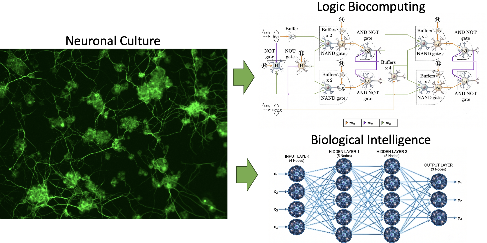
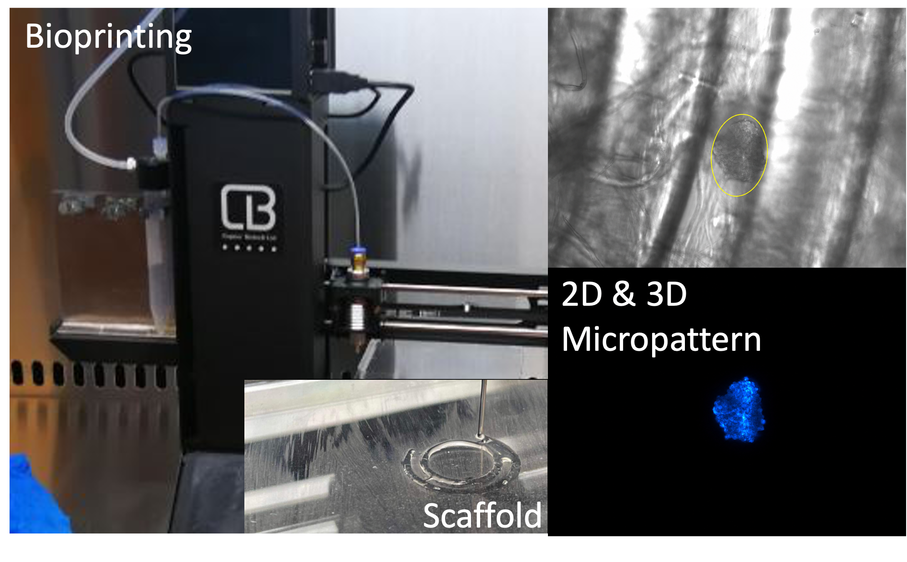
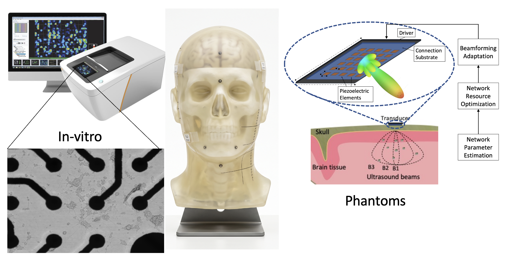

Apr 2026
“Advanced Neuronal Logic Circuit Designs Using Spiking Models” is published in npj Unconventional Computing.
Lecturer in Engineering and AI in Medicine
Founder and Director, UC² Laboratory
University of Essex
Engineering Biological Computation through Bioconvergence
Michael T. Barros investigates how living neural systems represent, transmit, transform and store information across molecular, cellular and network scales. His research integrates mechanistic modelling, neuron–astrocyte biology, network topology, biofabrication, electrophysiology and bioelectronic interfaces to identify the principles governing biological computation.
Living networks exhibit rich and adaptive dynamics, but their computational functions cannot yet be designed, reproduced or controlled reliably. His research uses bioconvergence to connect biological mechanisms with engineered structure, experimental measurement and digital prediction. By making biological information processing measurable, predictable and controllable, his research seeks to improve models of neurological dysfunction, guide more precise neural technologies and enable new forms of adaptive computation. Its long-term objective is to develop biohybrid systems in which living networks, electronic interfaces and computational models operate as a coupled adaptive system served to improve patient care through precision biomedicine.
€2M+ PI-led funding · 53 journal articles · 1,500+ citations · h-index 21 Google Scholar metrics, July 2026.
Research · Publications · UC² Laboratory · Institutional profile
Connecting biological mechanisms, engineered interfaces and digital models to predict and control living computation.

We investigate how calcium signalling, neuron–astrocyte interactions, neuronal activity and network topology regulate information transmission and computation. This work establishes mechanistic and quantitative descriptions of living systems across molecular, cellular and network scales.

We develop computational models and experimental strategies for controlling the structure and dynamics of living neural networks. Current work connects neuronal logic, memory, reservoir dynamics and topology-dependent computation with biofabricated cultures, organoids and MEA-based biological testing. Neuronal gates and sequential circuits have so far been demonstrated computationally.

We develop interfaces through which living activity can be measured, stimulated, represented and predicted. Bioelectronic interfaces, mechanistic models, AI and biological digital twins provide the components required to connect living dynamics with digital and electronic systems.
neurons · astrocytes · organoids · cellular networks
biofabrication · MEAs · measurement · stimulation
mechanistic models · AI · digital twins
The same mechanisms that generate biological intelligence become medically important when disrupted and technologically useful when engineered.
We quantify how demyelination, inflammatory signalling, seizures and altered neuron–astrocyte organisation disrupt information transmission and network dynamics. This creates mechanistic routes towards better disease models, biomarkers and intervention targets.
Mechanistic models, cell culture, MEA electrophysiology, biofabrication and biological digital twins connect biological state with measurable response. These methods could improve how experimental systems predict the effects of drugs, stimulation and network structure.
We investigate how neural activity can be measured and modulated with greater spatial selectivity, while treating interface security, signal integrity and biological safety as core engineering requirements.
We test whether living neural systems can support adaptive computation where autonomy, low-energy operation or direct coupling with biology matters. Reproducibility, controllability and energy efficiency are treated as measurable research questions rather than assumed advantages.
Connect for collaborations, speaking engagements, and media enquiries.
5B.535
Colchester Campus
University of Essex, UK